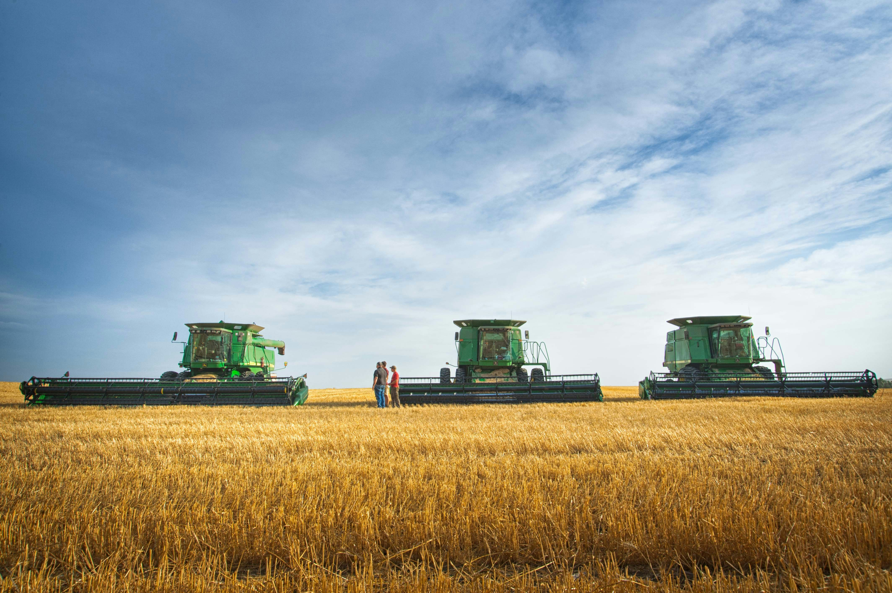

Części i materiały do John Deere
Specjalizujemy się w marce John Deere – znamy typowe usterki i różnice między seriami i rocznikami. Dzięki temu szybciej namierzamy właściwą część.
Dobierzemy elementy po numerze, opisie problemu albo zdjęciu, tak aby ciągnik, kombajn czy maszyna towarzysząca jak najszybciej wróciły do pracy.
- dobór części po modelu, numerze VIN lub numerze katalogowym,
- podpowiedzi „na telefon” – mówisz, co się dzieje, a my szukamy rozwiązania,
- krótsze przestoje maszyn w sezonie,
- filtry, oleje, paski, łożyska i inne materiały eksploatacyjne John Deere.